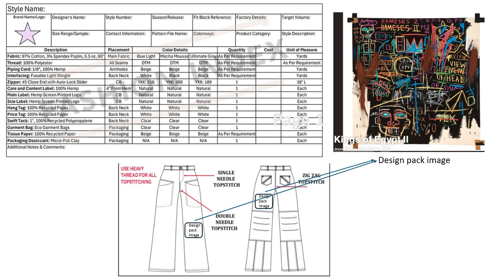
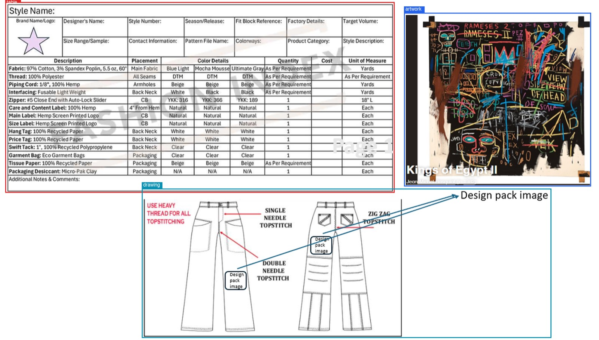
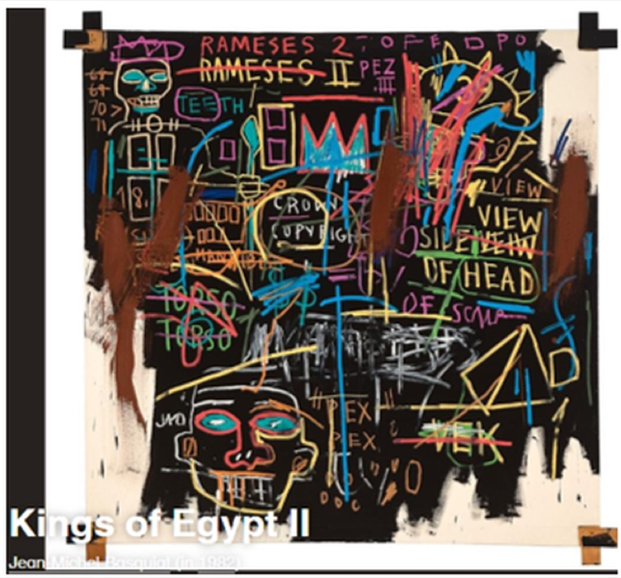
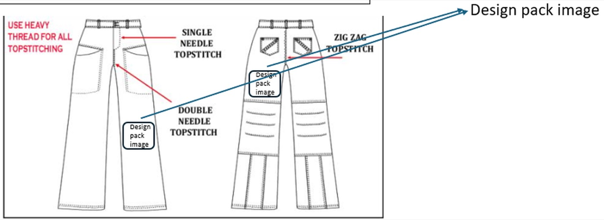

Considered path

1. Layout / segmentation
Split table, artwork, and drawing before anyone reads a glyph. Artwork is crop only. The table is a grid first.
2. Difficult OCR
Outliers are unbounded. One method: score the cell, mark, same Table VL call, typed lock last. Not a case list.
3. Domain translation
Glossary and frozen tokens before any model. Residual Qwen sees leftover prose only. Same cells, EN over CN.
1. Input

2. Layout split


